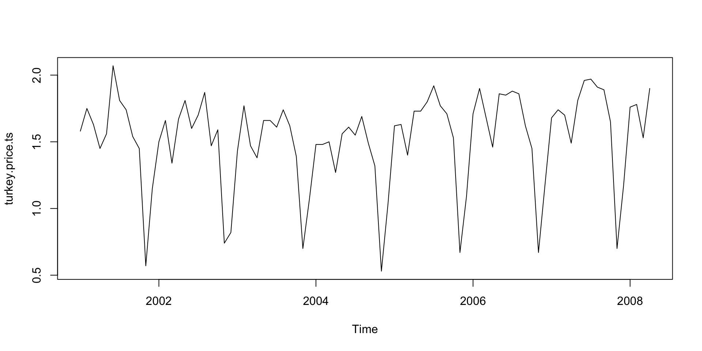

[1] "double"[1] "integer"[1] "character"[1] "list"[1] "closure"第七章：R 物件
實踐大學
2026-06-07
每個 R 物件都有底層的型別，可用 typeof() 查看。整個型錄可分成幾個自然的家族：
logical、integer、double、complex、character、raw；list 以及一切以串列為基礎的結構；symbol、call、expression；closure（R 層級）、builtin 與 special（以 C 實作）；NULL、環境，以及少數內部型別。向量是 R 的原子：有順序、同型別的集合。c() 會遞迴攤平它的引數：
名稱可以跟著元素走：
串列是異質容器，是 R 中一切複雜結構的骨幹：
[1] 88 92[1] "Kim"$name
[1] "Kim"Note
[ ] 與 [[ ]] 的差別。 單層中括號是切片，回傳串列；雙層中括號是取出單一元件，回傳元件本身。混淆兩者是最常見的串列錯誤。
矩陣是帶著長度為 2 的 dim 屬性的向量；陣列推廣到任意維度：
[,1] [,2] [,3]
[1,] 1 3 5
[2,] 2 4 6[1] 2 3 [,1] [,2]
[1,] 1 2
[2,] 3 4
[3,] 5 6 [,1] [,2]
[1,] 35 44
[2,] 44 56列名與欄名讓矩陣能自我說明：dimnames(m) <- list(c("r1","r2"), c("a","b","c"))。
因子（factor）儲存類別資料：內部是整數代碼，加上把代碼對應到標籤的 levels 屬性。
[1] S L M L S
Levels: S M Lsizes
S M L
2 1 2 [1] 1 3 2 3 1ordered = TRUE 建立有序因子（S < M < L），比較運算子會尊重順序。資料框——一列一筆觀測、一欄一個變數——技術上是一個等長向量的串列，類別為 data.frame：
'data.frame': 3 obs. of 3 variables:
$ player: chr "A" "B" "C"
$ yards : num 43 28 51
$ good : logi TRUE FALSE TRUE[1] 43 51str() 是 R 裡最有用的檢視工具：結構、型別、預覽一次看完。
公式不經求值地保存一段模型描述：
公式語法：+ 加入項、- 移除項、* 交叉（a*b = a + b + a:b）、: 是交互作用、. 代表「其餘所有欄位」、I() 保護算術（I(x^2)）。模型、lattice 圖與彙總函式都接受公式。
ts 物件替向量加上規律的時間中繼資料。依課程慣例，從 GitHub 載入課本的火雞價格序列：
[1] "ts"[1] 2001 1[1] 12
[1] "2026-09-29"[1] "Tuesday"[1] "POSIXct" "POSIXt" [1] "2026-06-07 19:00"Date；時間戳用 POSIXct。difftime 物件表示時間長度；seq(d, by = "month", length.out = 3) 能產生日曆序列。連線（connection）把資料來源抽象化——檔案、URL、壓縮檔、管線——讓讀取函式不必在意位元組從哪裡來：
課程慣例——先 download.file() 到暫存檔、再 load()——底層用的正是連線；mode = "wb" 確保二進位檔在各平台都完好無損。
屬性是讓普通向量升級成豐富結構的中繼資料：
[,1] [,2] [,3]
[1,] 1 3 5
[2,] 2 4 6[1] "matrix" "array" $dim
[1] 2 3names、dim、dimnames、levels、class 全都只是屬性——第十章的整套物件系統，就建立在這一個機制之上。
版權聲明。 本教材改編自 Joseph Adler 所著 R in a Nutshell: A Desktop Quick Reference（第二版，O’Reilly Media）。所有權利均由原作者與出版者保留。
僅供非商業用途。 本教材嚴格限定用於教育目的，不得用於商業獲利。
適當標註出處。 任何對本教材的重製、散布或使用，都必須適當標註原始出處。

R in a Nutshell: A Desktop Quick Reference